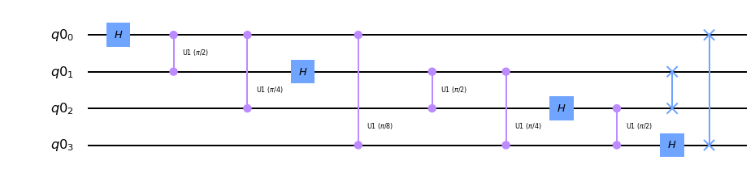

QFT¶
-
class
QFT(num_qubits=None, approximation_degree=0, do_swaps=True, inverse=False, insert_barriers=False, name='qft')[소스]¶ Quantum Fourier Transform Circuit.
The Quantum Fourier Transform (QFT) on \(n\) qubits is the operation
\[|j\rangle \mapsto \frac{1}{2^{n/2}} \sum_{k=0}^{2^n - 1} e^{2\pi ijk / 2^n} |k\rangle\]The circuit that implements this transformation can be implemented using Hadamard gates on each qubit, a series of controlled-U1 (or Z, depending on the phase) gates and a layer of Swap gates. The layer of Swap gates can in principle be dropped if the QFT appears at the end of the circuit, since then the re-ordering can be done classically. They can be turned off using the
do_swapsattribute.For 4 qubits, the circuit that implements this transformation is:
The inverse QFT can be obtained by calling the
inversemethod on this class. The respective circuit diagram is:
One method to reduce circuit depth is to implement the QFT approximately by ignoring controlled-phase rotations where the angle is beneath a threshold. This is discussed in more detail in https://arxiv.org/abs/quant-ph/9601018 or https://arxiv.org/abs/quant-ph/0403071.
Here, this can be adjusted using the
approximation_degreeattribute: the smallestapproximation_degreerotation angles are dropped from the QFT. For instance, a QFT on 5 qubits with approximation degree 2 yields (the barriers are dropped in this example):Construct a new QFT circuit.
- 매개변수
num_qubits (
Optional[int]) – The number of qubits on which the QFT acts.approximation_degree (
int) – The degree of approximation (0 for no approximation).do_swaps (
bool) – Whether to include the final swaps in the QFT.inverse (
bool) – If True, the inverse Fourier transform is constructed.insert_barriers (
bool) – If True, barriers are inserted as visualization improvement.name (
str) – The name of the circuit.
Attributes
The approximation degree of the QFT.
Returns a list of classical bits in the order that the registers were added.
Return the circuit data (instructions and context).
Whether the final swaps of the QFT are applied or not.
Whether barriers are inserted for better visualization or not.
Deprecated, use
num_qubitsinstead.Return number of classical bits.
Convenience function to get the number of parameter objects in the circuit.
The number of qubits in the QFT circuit.
Convenience function to get the parameters defined in the parameter table.
A list of the quantum registers associated with the circuit.
Returns a list of quantum bits in the order that the registers were added.
Methods
QFT.AND(qr_variables, qb_target, qr_ancillae)Build a collective conjunction (AND) circuit in place using mct.
QFT.OR(qr_variables, qb_target, qr_ancillae)Build a collective disjunction (OR) circuit in place using mct.
QFT.__getitem__(item)Return indexed operation.
Return number of operations in circuit.
QFT.add_register(*regs)Add registers.
QFT.append(instruction[, qargs, cargs])Append one or more instructions to the end of the circuit, modifying the circuit in place.
QFT.assign_parameters(param_dict[, inplace])Assign parameters to new parameters or values.
QFT.barrier(*qargs)Apply
Barrier.QFT.bind_parameters(value_dict)Assign numeric parameters to values yielding a new circuit.
QFT.cast(value, _type)Best effort to cast value to type.
Converts several classical bit representations (such as indexes, range, etc.) into a list of classical bits.
QFT.ccx(**kwargs)Apply
CCXGate.QFT.ch(**kwargs)Apply
CHGate.Return the current number of instances of this class, useful for auto naming.
Return the prefix to use for auto naming.
QFT.cnot(**kwargs)Apply
CXGate.QFT.combine(rhs)Append rhs to self if self contains compatible registers.
QFT.compose(other[, qubits, clbits, front, …])Compose circuit with
othercircuit or instruction, optionally permuting wires.QFT.copy([name])Copy the circuit.
Count each operation kind in the circuit.
QFT.crx(**kwargs)Apply
CRXGate.QFT.cry(**kwargs)Apply
CRYGate.QFT.crz(**kwargs)Apply
CRZGate.QFT.cswap(**kwargs)Apply
CSwapGate.QFT.cu1(**kwargs)Apply
CU1Gate.QFT.cu3(**kwargs)Apply
CU3Gate.QFT.cx(**kwargs)Apply
CXGate.QFT.cy(**kwargs)Apply
CYGate.QFT.cz(**kwargs)Apply
CZGate.QFT.dcx(qubit1, qubit2)Apply
DCXGate.Call a decomposition pass on this circuit, to decompose one level (shallow decompose).
Return circuit depth (i.e., length of critical path).
QFT.diag_gate(diag, qubit)Deprecated version of QuantumCircuit.diagonal.
QFT.diagonal(diag, qubit)Attach a diagonal gate to a circuit.
QFT.draw([output, scale, filename, style, …])Draw the quantum circuit.
QFT.extend(rhs)Append QuantumCircuit to the right hand side if it contains compatible registers.
QFT.fredkin(**kwargs)Apply
CSwapGate.QFT.from_qasm_file(path)Take in a QASM file and generate a QuantumCircuit object.
QFT.from_qasm_str(qasm_str)Take in a QASM string and generate a QuantumCircuit object.
QFT.h(**kwargs)Apply
HGate.QFT.hamiltonian(operator, time, qubits[, label])Apply hamiltonian evolution to to qubits.
QFT.has_register(register)Test if this circuit has the register r.
QFT.i(**kwargs)Apply
IGate.QFT.id(**kwargs)Apply
IGate.QFT.iden(**kwargs)Deprecated identity gate.
QFT.initialize(params, qubits)Apply initialize to circuit.
Invert this circuit.
Whether the inverse Fourier transform is implemented.
QFT.iso(isometry, q_input, q_ancillas_for_output)Attach an arbitrary isometry from m to n qubits to a circuit.
QFT.isometry(isometry, q_input, …[, …])Attach an arbitrary isometry from m to n qubits to a circuit.
QFT.iswap(qubit1, qubit2)Apply
iSwapGate.QFT.mcmt(**kwargs)Apply a multi-control, multi-target using a generic gate.
QFT.mcrx(theta, q_controls, q_target[, …])Apply Multiple-Controlled X rotation gate
QFT.mcry(theta, q_controls, q_target, q_ancillae)Apply Multiple-Controlled Y rotation gate
QFT.mcrz(lam, q_controls, q_target[, …])Apply Multiple-Controlled Z rotation gate
QFT.mct(control_qubits, target_qubit[, …])Apply
MCXGate.QFT.mcu1(lam, control_qubits, target_qubit)Apply
MCU1Gate.QFT.mcx(control_qubits, target_qubit[, …])Apply
MCXGate.QFT.measure(qubit, cbit)Measure quantum bit into classical bit (tuples).
QFT.measure_active([inplace])Adds measurement to all non-idle qubits.
QFT.measure_all([inplace])Adds measurement to all qubits.
Mirror the circuit by reversing the instructions.
QFT.ms(theta, qubits)Apply
MSGate.QFT.num_connected_components([unitary_only])How many non-entangled subcircuits can the circuit be factored to.
Return number of non-local gates (i.e.
Computes the number of tensor factors in the unitary (quantum) part of the circuit only.
Computes the number of tensor factors in the unitary (quantum) part of the circuit only.
QFT.qasm([formatted, filename])Return OpenQASM string.
Converts several qubit representations (such as indexes, range, etc.) into a list of qubits.
QFT.r(**kwargs)Apply
RGate.QFT.rcccx(control_qubit1, control_qubit2, …)Apply
RC3XGate.QFT.rccx(control_qubit1, control_qubit2, …)Apply
RCCXGate.QFT.remove_final_measurements([inplace])Removes final measurement on all qubits if they are present.
QFT.reset(qubit)Reset q.
QFT.rx(**kwargs)Apply
RXGate.QFT.rxx(theta, qubit1, qubit2)Apply
RXXGate.QFT.ry(**kwargs)Apply
RYGate.QFT.ryy(theta, qubit1, qubit2)Apply
RYYGate.QFT.rz(**kwargs)Apply
RZGate.QFT.rzx(theta, qubit1, qubit2)Apply
RZXGate.QFT.rzz(theta, qubit1, qubit2)Apply
RZZGate.QFT.s(**kwargs)Apply
SGate.QFT.sdg(**kwargs)Apply
SdgGate.QFT.size()Returns total number of gate operations in circuit.
QFT.snapshot(label[, snapshot_type, qubits, …])Take a statevector snapshot of the internal simulator representation.
QFT.snapshot_density_matrix(label[, qubits])Take a density matrix snapshot of simulator state.
QFT.snapshot_expectation_value(label, op, qubits)Take a snapshot of expectation value <O> of an Operator.
QFT.snapshot_probabilities(label, qubits[, …])Take a probability snapshot of the simulator state.
QFT.snapshot_stabilizer(label)Take a stabilizer snapshot of the simulator state.
QFT.snapshot_statevector(label)Take a statevector snapshot of the simulator state.
QFT.squ(**kwargs)Decompose an arbitrary 2*2 unitary into three rotation gates.
QFT.swap(qubit1, qubit2)Apply
SwapGate.QFT.t(**kwargs)Apply
TGate.QFT.tdg(**kwargs)Apply
TdgGate.QFT.to_gate([parameter_map])Create a Gate out of this circuit.
QFT.to_instruction([parameter_map])Create an Instruction out of this circuit.
QFT.toffoli(**kwargs)Apply
CCXGate.QFT.u1(**kwargs)Apply
U1Gate.QFT.u2(**kwargs)Apply
U2Gate.QFT.u3(**kwargs)Apply
U3Gate.QFT.uc(gate_list, q_controls, q_target[, …])Attach a uniformly controlled gates (also called multiplexed gates) to a circuit.
QFT.ucg(angle_list, q_controls, q_target[, …])Deprecated version of uc.
QFT.ucrx(angle_list, q_controls, q_target)Attach a uniformly controlled (also called multiplexed) Rx rotation gate to a circuit.
QFT.ucry(angle_list, q_controls, q_target)Attach a uniformly controlled (also called multiplexed) Ry rotation gate to a circuit.
QFT.ucrz(angle_list, q_controls, q_target)Attach a uniformly controlled (also called multiplexed gates) Rz rotation gate to a circuit.
QFT.ucx(angle_list, q_controls, q_target)Deprecated version of ucrx.
QFT.ucy(angle_list, q_controls, q_target)Deprecated version of ucry.
QFT.ucz(angle_list, q_controls, q_target)Deprecated version of ucrz.
QFT.unitary(obj, qubits[, label])Apply unitary gate to q.
Return number of qubits plus clbits in circuit.
QFT.x(**kwargs)Apply
XGate.QFT.y(**kwargs)Apply
YGate.QFT.z(**kwargs)Apply
ZGate.QFT.__getitem__(item)Return indexed operation.
Return number of operations in circuit.